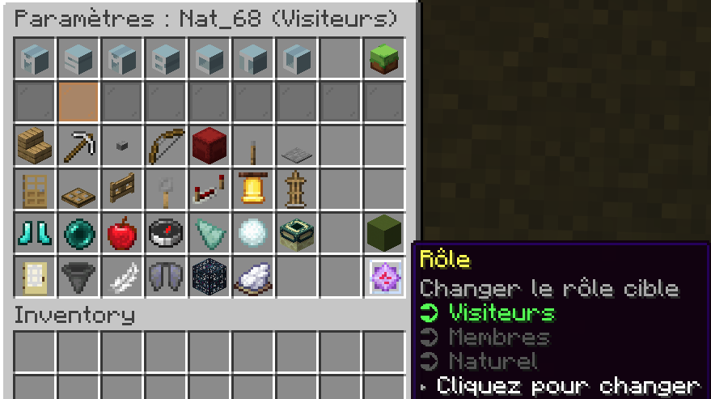

Les claims servent à protéger vos chunk(s) et coffres contre toute intrusion ou modification non autorisée.
En activant un claim, vous vous assurez que vos constructions, vos ressources et vos objets restent entièrement sécurisés, même lorsque d’autres joueurs se trouvent à proximité.
Cet outil est essentiel pour gérer efficacement votre territoire, organiser vos espaces et préserver vos biens, tout en offrant la possibilité de contrôler précisément qui peut interagir avec vos zones sur le serveur.
Voici la liste des commandes de claim disponibles pour gérer vos territoires :
- /claim : réclame un chunk pour votre usage personnel.
- /unclaim : libère un chunk que vous possédez.
- /claim settings : modifie les paramètres de votre/vos claim(s).
- /claim owner : transfère la propriété de votre/vos claim(s) à un autre joueur.
- /claim merge : fusionne plusieurs claim(s) en un seul pour simplifier la gestion.
- /claim add : ajoute un joueur à votre/vos claim(s).
- /claim accept : accepte une invitation à rejoindre un claim.
- /claim members : affiche la liste des joueurs ayant accès à votre/vos claim(s).
- /claim kick : retire un joueur de votre/vos claim(s).
- /claim see : montre visuellement la limite de votre/vos claim(s) avec des lignes vertes.
- /claim ban : bannit un joueur de votre/vos claim(s).
- /claim unban : débannit un joueur de votre/vos claim(s).
- /claim bans : affiche la liste des joueurs bannis de votre/vos claim(s).
- /claim setname : définit le nom de votre/vos claim(s).
- /claim setdesc : définit la description de votre/vos claim(s).
- /claim setspawn : définit le spawn de votre/vos claim(s).
- /claim tp : se téléporte au spawn de votre/vos claim(s) avec un délai de 5secondes.
- /claims : affiche tous les claims existants pour tous les joueurs.
- /claim autoclaim : claim automatiquement les chunks sur lesquels vous passez.
- /claim autounclaim : unclaim automatiquement les chunks sur lesquels vous passez.
Ces commandes offrent un contrôle total sur vos territoires, vous permettant de gérer facilement vos claim(s), de protéger vos biens et constructions contre toute intrusion, et de collaborer efficacement avec d’autres joueurs tout en adaptant les permissions et les interactions selon vos besoins.
Voici la liste des paramètres (settings) disponibles pour votre/vos claim(s) afin de contrôler toutes les interactions possibles :
- Construire : autoriser la construction de blocs.
- Détruire : autoriser la destruction de blocs.
- Utiliser des boutons
- Utiliser des objets
- Interagir avec des blocs
- Utiliser des leviers
- Utiliser des plaques de pression
- Utiliser les portes
- Utiliser les trappes
- Utiliser les portails
- Déclencher les fils pièges
- Utiliser les répéteurs / comparateurs
- Utiliser les cloches
- Interagir avec les entités
- Utiliser Frost Walker
- Utiliser les téléporteurs naturels (enderpearl, fruit de chorus, etc.)
- Infliger des dommages aux entités
- Téléportation via GUI
- Vol (/fly)
- Météo
- Entrer dans votre/vos claim(s)
- Ramasser des objets
- Drop des objets
- Elytras
- Utiliser les charges de vent
Ces paramètres vous permettent de contrôler totalement l’accès et les interactions dans votre/vos claim(s), offrant sécurité et personnalisation selon vos besoins.
